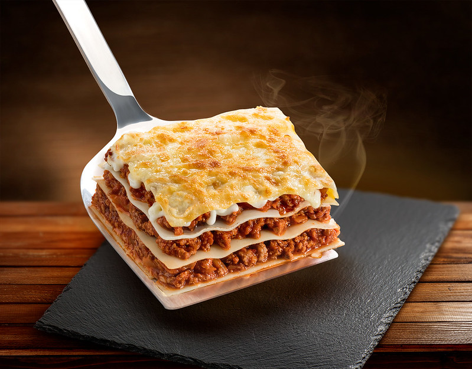

Lasagna

Description
Special homemade lasagna recipe with a meaty, made-from-scratch tomato sauce and a deliciously cheesy filling. A more traditional homemade lasagna filling would be made with ricotta but my mom's recipe calls for a blend of small-curd cottage cheese and Parmesan. I have found none better anywhere. Serve with a leafy green salad and crusty garlic bread.
Making lasagna can be time-consuming, but the results are well worth the wait. You'll find a detailed ingredient list and step-by-step instructions in the recipe below, but let's go over the basics:
Homemade Lasagna Ingredients
- Meat: 1 pound of ground meat (1/2 pound ground pork, 1/2 pound lean ground beef.
- Onion: A diced onion is cooked until translucent with ground meat.
- Canned tomatoes: 1 can of tomato sauce and 1 can of crushed tomatoes.
- Fresh herbs: Chop two tablespoons of parsley and crush one clove of garlic.
- Sugar: A dash of sugar.
- Spices and Seasonings: Dried basil, dried oregano, salt, and black pepper.
- Noodles: Lasagna noodles.
- Cheese: Cottage cheese, parmesan, and shredded mozzarella.
- Eggs: Eggs.
Steps
- Cook the meat: Cook the ground meat in a skillet until browned and crumbly. Add the onion and continue cooking until it's translucent. Stir in the canned tomato products, half of the parsley, garlic, basil, 1.5 teaspoons of salt, oregano, and sugar.
- Cook the noodles:
- Cook the noodles: Boil the lasagna noodles in lightly salted water until they're al dente.
- Make the cheese layer: Mix cottage cheese, Parmesan cheese, eggs, the remaining parsley, the remaining salt, and pepper in a bowl.
- Assemble the lasagna: Layer the ingredients according to the recipe (starting with sauce and ending with mozzarella) until the lasagna is assembled.
- Bake the lasagna: Cover with foil and bake in the preheated oven for about half an hour. Remove the foil and continue baking until the top is golden brown.